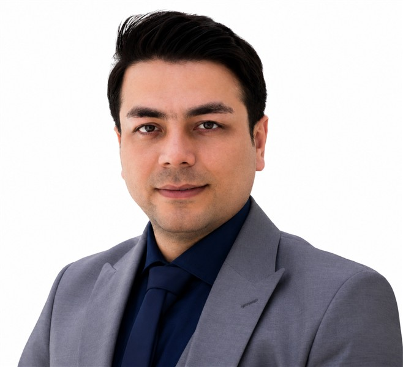

Mechanical Engineering
Arizona State University
2022–2026 · GPA 3.8/4.0Applied Design, Manufacturing & Materials Processing
Advisor: Prof. Wonmo Kang

MECHANICAL ENGINEER · RESEARCHER
I’m Dr. Hamid Safari, a mechanical engineer connecting computational models with hands-on experimentation.
With a PhD in Mechanical Engineering from Arizona State University, my work brings together multiphysics simulation, advanced materials, plasma-assisted processing, and additive manufacturing.
At ASU’s Bio and Nano Lab, I have worked on PECVD/CVD system instrumentation, graphene-coated metal composites, and shape-optimized auxetic structures. I enjoy taking a question through the full cycle: understand the physics, build a model, design a process, and test what actually happens.
Tempe, Arizona · Open to relocation
EDUCATION & RECOGNITION
Arizona State University
2022–2026 · GPA 3.8/4.0Isfahan University of Technology
2014–2017Iran University of Science and Technology
2009–2014Recognized for leadership, academic excellence, and commitment to community impact.
Supported undergraduate teaching in foundational engineering mechanics.
PUBLICATIONS
No publications match. Try another title or topic.
Current work includes CVD-graphene-coated nickel foam, size-dependent electromechanical behavior of graphene-coated copper wires, and experimental evaluation of LPBF-fabricated auxetic structures. These studies are listed separately from published journal articles.
LET’S BUILD WHAT COMES NEXT
I welcome conversations about engineering roles and research collaborations in simulation, materials, plasma processing, and advanced manufacturing.
hsafari@asu.edu ↗